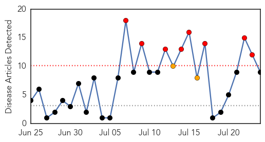
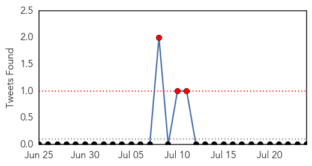
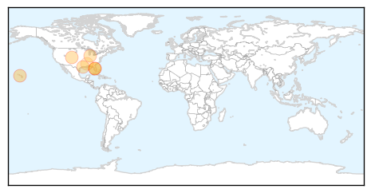
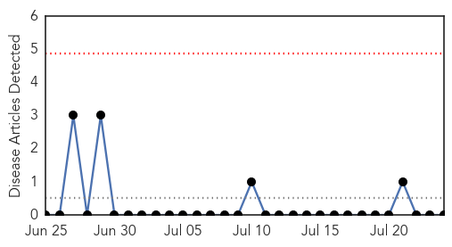
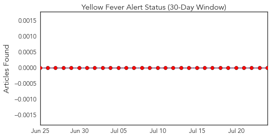
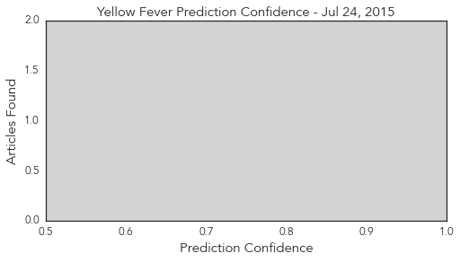

West Nile Virus
30-Day Web Trend
8 alerts, 2 warnings

30-Day Twitter Trend
3 alerts, 0 warnings

Article Locations
Article Confidences
Top Articles:
- 0.996
- What is West Nile Virus? What causes West Nile Virus?
- 0.961
- Florida News Straight from the Source
- 0.956
- West Nile detected in chickens in Contra Costa County
- 0.907
- Colorado records first livestock West Nile virus case in Boulder horse
- 0.907
- WEST NILE VIRUS CONFIRMED IN WALTON COUNTY ……….
- 0.859
- Additional WNV, EEE Cases Reported in Texas Horses
- 0.858
- West Nile virus Archives
- 0.672
- West Nile-positive mosquitoes found in Morton Grove
- 0.548
- West Nile Virus concern is paramount to other mosquito-borne ill
Top Tweets:
-
No tweets found for Jul 24, 2015
Yellow Fever
30-Day Web Trend
0 alerts, 0 warnings

30-Day Twitter Trend
0 alerts, 0 warnings

Article Locations

Article Confidences
Top Articles:
-
No articles found for Jul 24, 2015
Top Tweets:
-
No tweets found for Jul 24, 2015